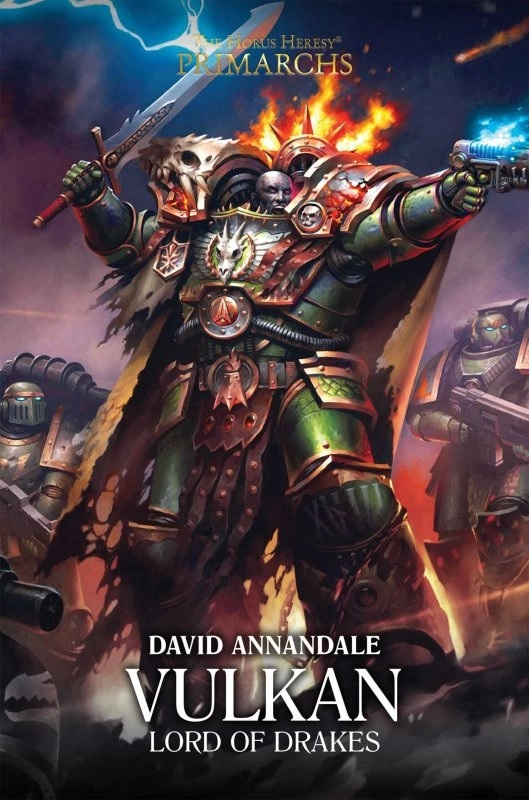

VULKAN: LORD OF DRAKES

Author: David Annandale
Format: Novel
The XVIII Legion still does not know that its own lord has been found. On one front its Terran warriors face extinction against a monstrous ork invasion, while on Nocturne Vulkan has quietly raised and trained a new force of his own. This is the story of how two halves became one indivisible Legion, and of Vulkan taking up the mantle of primarch.
Introduction reviewed against Black Library’s description on 2026-09-27. The publisher page may contain spoilers.
Publication facts: publisher source, checked 2026-09-26.
Open this work in the interactive Archive to track reading progress and explore related works.
Take the three-question memory check for this work. The quiz contains story spoilers.